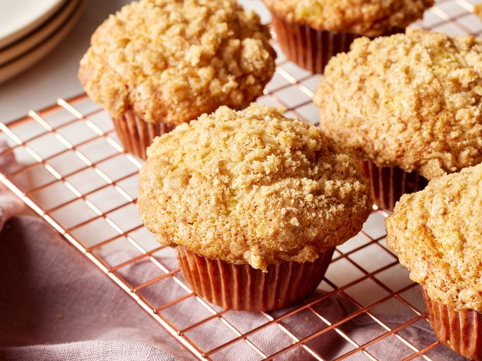

Banana Crumb Muffins

The best banana muffin recipes have a sweet crumb topping which is what makes these banana muffins stand apart from the ordinary. They're scrumptious!
Ingredients
Muffins:
- 1 1/2 cups all-purpose flour
- 1 teaspoon baking soda
- 1 teaspoon baking powder
- 1/2 teaspoon salt
- 3 bananas, mashed
- 3/4 cup white sugar
- 1/3 cup butter, melted
- 1 egg, lightly beaten
Crumb Topping:
- ⅓ cup packed brown sugar
- 2 tablespoons all-purpose flour
- ⅛ teaspoon ground cinnamon
- 1 tablespoon butter
Steps:
- Gather all ingredients. Preheat the oven to 375 degrees F (190 degrees C). Lightly grease or line 10 muffin cups with paper liners.
- Prepare muffins: Mix flour, baking soda, baking powder, and salt together in a large bowl.
- Beat bananas, white sugar, melted butter, and egg together in a separate bowl.
- Stir the banana mixture into the flour mixture just until combined.
- Spoon batter into prepared muffin cups, filling each about 3/4 full.
- Prepare crumb topping: Mix brown sugar, flour, and cinnamon together in a small bowl. Use a fork to mix in 1 tablespoon butter until mixture is crumbly; sprinkle topping over muffins.
- Bake in the preheated oven until a toothpick inserted into the center comes out clean, 18 to 20 minutes.
- Serve and enjoy!
Return to homepage here.